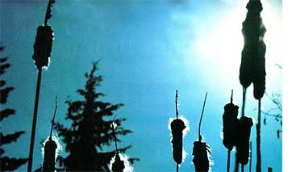
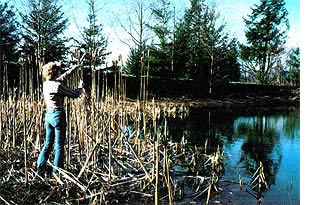
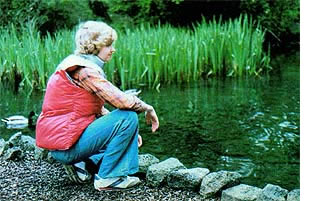
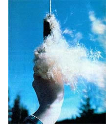

In the September/October 1979 issue, Armand Lione explained how to put foraged milkweed fluff to work as a substitute for costly goose down.
Despite the fact that plenty of warm summer days are still ahead, it's never too early to prepare for the icy winter blasts to come . . . and one of the best "cold resist ers" available is goose down, when packed
into jackets, vests, comforters, and sleep in bags.
Yet anyone who's shopped for such articles lately will be well aware of the high prices that feather insulation brings. In fact, even synthetic fibers-such as Da- cron- aren't much less expensive . . . and
are heavier, bulkier, and less compress able than is prime goose or duck down, as well! There is, however, a near-perfect solution to the soaring cost of clothing fillers: cattail "cotton", a proven insulation that's free, widely distributed, and light in weight.
The idea of putting mature cattail spikes to use is nothing new. Members of several native American tribes once used the soft fluff to line such items as moccasins and papoose boards. Later on, pioneers employed the down when stuffing quilts and dolls . . . dressing wounds . . . and providing tinder for fires sparked by flint and steel.
You may be surprised to know, though, that almost every part of the Typha lati- folia plant has been found to be useful at one time or another. The stems once served as candlewick holders, the leaves will make fine woven chair seats, and (as any wild plant forager can tell you) the stems, pollen, spikes, shoots, and roots can-at different times of the year-be prepared as tasty and nutritious food. (See MOTHER NO. 51 for some delicious ways to add cattails to your diet.)
However, the potential of cattail down as an inexpensive-but quality-alternative to waterfowl feathers was recognized (briefly) only during World War II, when shortages and embargoes forced the wartional materials. Since the compacted fluff was found to have excellent heat- and sound-insulating properties, for example, the Germans used boards made of compressed cattail fibers in construction. Prior to the war, the United States had
imported 90% of its kapok supply from the Dutch East Indies (in the days before the introduction of man-made fillers, the tropical plant fiber was an important padding in such items as life jackets and mattresses). When the islands fell to the Japanese, our kapok supply was cut off . . . and some form of replacement had to be found
immediately.
It was then that a Chicago company began to substitute cattail cotton in furni ture cushions and baseballs. Soon afterward, the Navy decided to look into the possibility of using the fuzzy heads of the aquatic weed in life belts and aviation jackets. Sure enough, a wartime water-resistance test demonstrated that-even after 100 hours of submersion-the "swamp down" was capable of maintaining buoyancy. So, cattail fluff (along with milkweed down) was briefly seen as a "war effort resource".
After the shortages ended, however, cattails were once again relegated to their former status of "useless weeds". But even though the valuable plants are still ignored by the world at large, there's no reason you shouldn't take advantage of the free down they produce . . . by gathering the material to fill such items as clothing, comforters, and pillows.
There're many sewing kits available (from suppliers of outdoor equipment and fabric shops), which-along with their instructions for cutting and sewing downfilled vests, jackets etc.--will show you how to construct the tubelike channels necessary to prevent the insulation from shifting around in the garment. You'll want to purchase a package that furnishes a pattern only ... rather than pay for the goose down included in some kits.
The author models her first sewing project . . . a warm land attractive) "down" vest that was assembled for a total cost of under $10! Studies during the Second World War proved that cattail fluff can maintain its loft and buoyancy even after 100 hours underwater!
My first cattail-insulated item-a padded vestcost less than $10 to produce, including the cash spent in buying some ripstop nylon material, a zipper, and the pattern kit.My garment is warm, waterproof, and washable .. . and its cattail-fiber filling is almost as compressible as goose down.
And, though I haven't gotten around to sewing one yet, I'm sure that a sleeping bag stuffed with the swamp-produced material would be a viable alternative to one filled with down . . . although such a large project would be time-consuming.
Be sure, when working with cattail fluff, to insert the material into the tubes loosely, making certain that it doesn't clump. Remember, too, to use tight stitches . . . at least 10 per inch. Other than the fact that it requires that you keep those two considerations in mind, sewing downfilled clothing demands about the same needlework skills as does making any other type of garment.
You'll want to forage your supply of wild cattail insulation on a calm day . . . otherwise, the wind might blow away much of your crop as you try to collect the down. Since the useful plants mature in late summer, the fluff can be gathered from then until early spring. It's best, though, to do your harvesting after a spell of dry weather ... when the spikes are fully dehydrated. Choose only the firm, brown 'tails to put in your collecting sack. The cotton from already exploded blooms is of lesser quality, and discouragingly messy to gather. When you locate a "ripe" stand, snap off the entire sausage-shaped head from each plant . . . and remember always to handle your harvest by the stems to prevent accidentally breaking the seed "parachutes" loose.
The free stuffin' . . . right from the stalk.
Next, the down must be stripped from the heads. This can be done either in an outdoor, sheltered location, or-better yet -indoors.
If you decide to de-fluff your cattails in the house, spread out some newspapers before you begin work so you won't create a "carpet" of blownout seeds. Then just take hold of each spike by the base of its stem and pull gently. The fuzz will unwind from the core, and each mature head will yield about a double-handful of the fluffy material. You'll need to strip only around a dozen good-sized cattails to gather sufficient down for a vest. (Naturally, the larger the item, the more plants you'll have to collect.)
After the furry seeds have been freed from their "cobs" (and the cores and stems discarded), you'll have a bagful of clean, downy fleece. While most commercial manufacturers who once used cattail down employed machines to beat out the small seeds, the little propagators are so tiny that their removal really isn't necessary. (Three hundred thousand seedsenough to plant six acresweigh only one-third of an ounce!)
Just work the material with your hands (while it's inside the sack, to avoid scattering your down) until it's loose and fluffy, and no lumps remain. It can then be stuffed into cushions, clothing, or whatever you like.
Cattails, in addition to their insulating qualities and their potential for feeding a hungry world with food grown on marginal land, can provide raw material for many products (including alcohol fuel, adhesives, and fibers . . . to name just a few). It's surprising to me that the plants aren't being investigated more thoroughly.
Perhaps someday farmers will produce more of the useful aquatic plants . . . instead of draining marshes (and thereby destroying valuable wildlife refuges). A portion of our future, in other words, may lie not in the chemist's laboratory, but in Mother Nature's swamps..
|
 PHOTOS BY THE AUTHOR A fete autumn stand of nature's fuzzy insulators backlit by the setting sun. |
 Choose a calm day to go harvesting . . . and wait for a spell of dry weather to avoid a sackful of sodden stuffing. Cattails that have not yet scattered their seed to the wind are best . . , just snap the stem below the 'tail. BELOW', |
 The author models her first sewing project . . . a warm land attractive) ""down"" vest that was assembled for a total cost of under $10! Studies during the Second World War proved that cattail fluff can maintain its loft and buoyancy even after 100 hours underwater! |
|
 The free stuffin' . . . right from the stalk. |
|
|